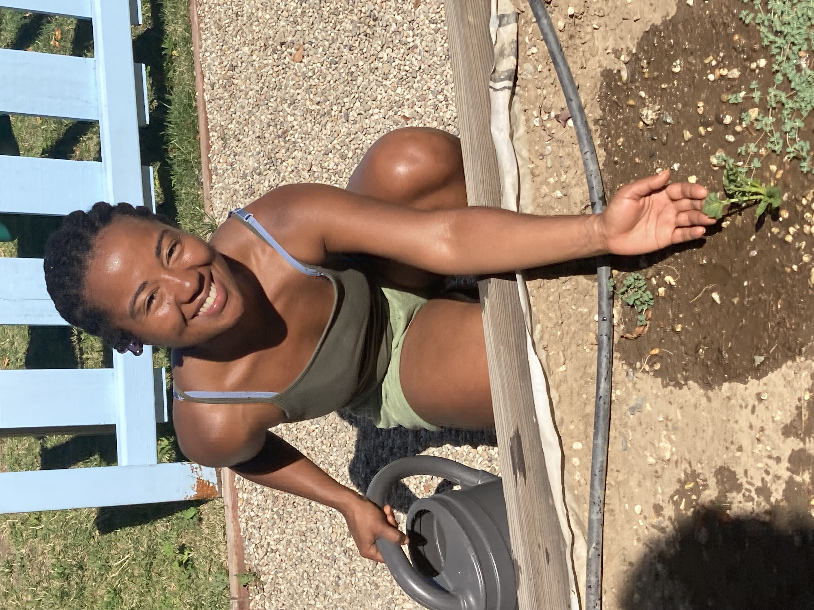

Crystal Ferguson-Carmier
UC Riverside student majoring in Environmental Studies with a minor in Public Policy.
Environmental enthusiast with a passion for ecological restoration. Strong interest in climate change solutions, specifically in waste pollution. As an Environmental Studies major, I will be armed with the knowledge of the relationship between humans and the environment and how that connection contributes to climate change. In addition to an environmental health-based major, a minor in Public Policy will provide political insight and equip me with the tools and resources needed to lobby for policing laws that that are beneficial for environmental remediation. While attending UCR I plan to participate in undergraduate research under the guidance of the Department of Society, Environment, and Health Equity. As an undergraduate research assistant, I will receive mentorship from a UCR faculty member who is an experienced environmentalist. This type of counsel will be a vital instrument in gaining experience needed for graduate school and higher education. Alongside undergraduate research, I plan to intern for the County of Riverside Departmaent of Environmental Health in Spring 2027, where I will work in tandem with Environmental Health Specialists to learn how to apply environmental solutions to real-world issues. Lastly, I will volunteer with the Riverside County Department of Waster Resources under their outreach program. Where I will advocate for appropriate recycling methods; how to properly recycle, reuse, and reduce reprocessable materials. As well as educating Inland Empire residents and pedestrians on the non-recyclable trash removal methods for optimal waste management results.
Outside of UC Riverside, I've been exposed to a multitude of eco-conscious environments and opportunities. I've visited a variety of aquariums in California, such as Birch Aquarium Scripps in San Diego and Aquarium of the Pacific in Long Beach. While attending the aquarium exhibits I invest time into learning about the ways that these aquatic institutions are contributing to environmental health. For example, Birch Aquarium recently released over 200 endangered Yellow-legged frogs back into their natural habitat in San Jacinto Mountains. The Yellow-legged frogs are vital to maintaining a harmonious balance in the creeks/brooks and mountain ecosystems in San Jacinto. At the Aquarium of the Pacific I had the opportunity to learn about the invasive species, the coyote bush. A plant that interferes with the stream fluctuation and how the water flows from the aqueducts into Seal Beach. After I learned about the traits of the coyote bush, I was taught how to properly remove and dispose of the plant.
In addition to aquarium organizations I have visited a few natural reserves, the ones that stood out were located in San Luis Obispo and in the Domincan Republic. In San Luis Obispo there is a conservation reserve that rescues turtles, birds, and other mammals that are in need of a home. The organization informs you about the rescue mammals and animals background and what they are doing to best cater to them. In Punta Cana, Dominican Republic there is an ecological reserve where tourists can explore around protected forests surrounded by freshwater lagoons and rescue animals/mammals. The ecological reserve contiuously contributes to climate change solutions and does it part through conservation efforts.
These experiences previously mentioned educates and allows me to put forth the effort into my passion of contributing to waste pollution solutions in urban and rural environments.
Experience
Tutor
• Develop assessment strategies to evaluate students' knowledge, centering lessons on recurring difficulties
• Daily log emphasizing challenges and recommendations to improve students' learning ability
Freelance Co-Writer
• Transcribed co-writers outline, own input into script format for pilot of animated children series
• Assisted with development of series logline
Production Designer
• Managed and organized visuals for short film
• Directed set dressers providing each with tasks based on skill set
• Logged invoice(s) for non- and refundable expenses
Education
UC Riverside
Portfolio




